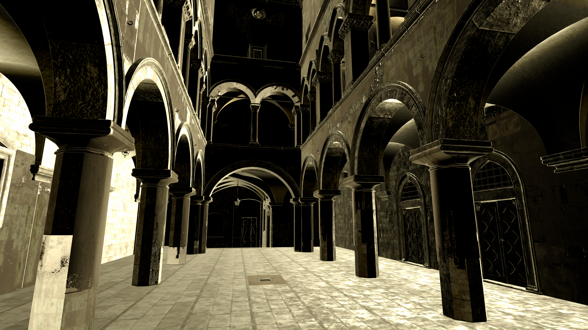
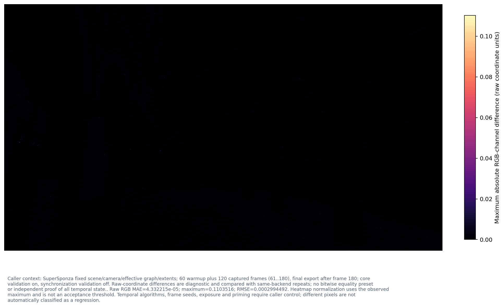

Native 1920x1080 RGB preview from RGBA16Sfloat; encoding enum=2; preview transfer=linear-rec709, fixed clipping to raw [0,1], alpha ignored for display but checked for finiteness. No adaptive exposure or tone mapping. SceneLinear/ExposedLinear basis is not guessed; HDR values outside the clipping interval remain in raw statistics.
Render output preview 2

Native 1920x1080 RGB preview from RGBA16Sfloat; encoding enum=2; preview transfer=linear-rec709, fixed clipping to raw [0,1], alpha ignored for display but checked for finiteness. No adaptive exposure or tone mapping. SceneLinear/ExposedLinear basis is not guessed; HDR values outside the clipping interval remain in raw statistics.
Render output numerical comparison

Caller context: SuperSponza fixed scene/camera/effective graph/extents; 60 warmup plus 120 captured frames (61..180), final export after frame 180; core validation on, synchronization validation off. Raw-coordinate differences are diagnostic and compared with same-backend repeats; no bitwise equality preset or independent proof of all temporal state.. Raw RGB MAE=4.332215e-05; maximum=0.1103516; RMSE=0.0002994492. Heatmap normalization uses the observed maximum and is not an acceptance threshold. Temporal algorithms, frame seeds, exposure and priming require caller control; different pixels are not automatically classified as a regression.